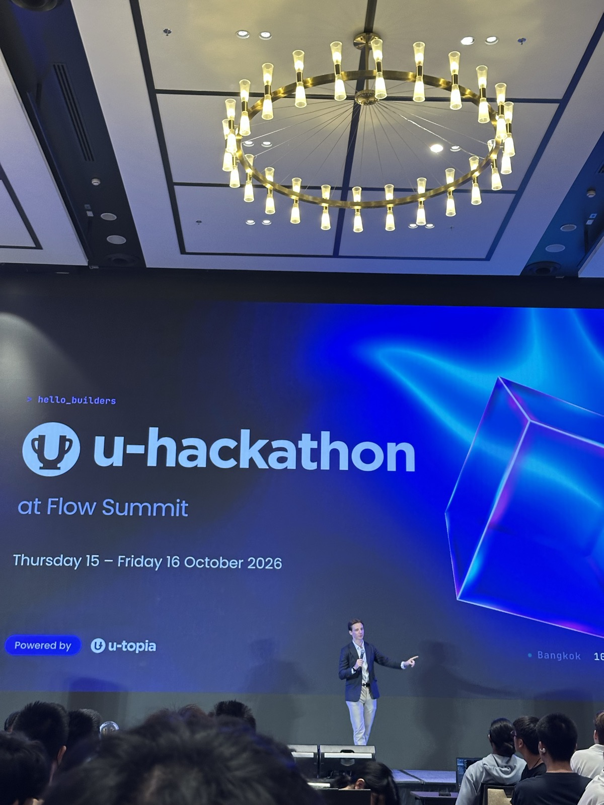
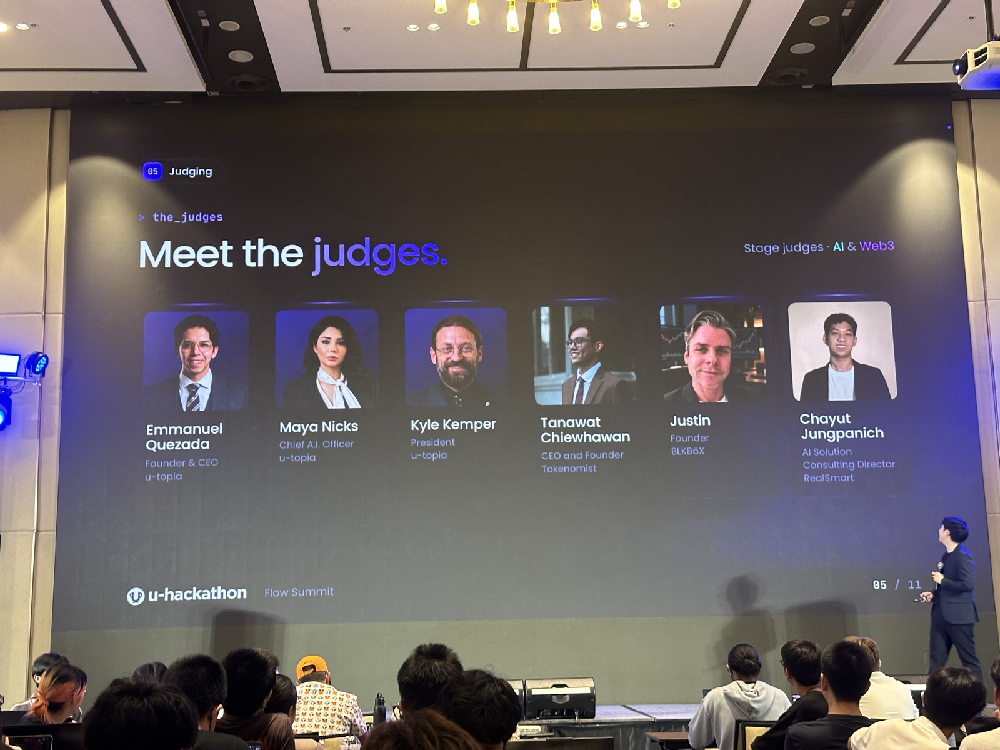
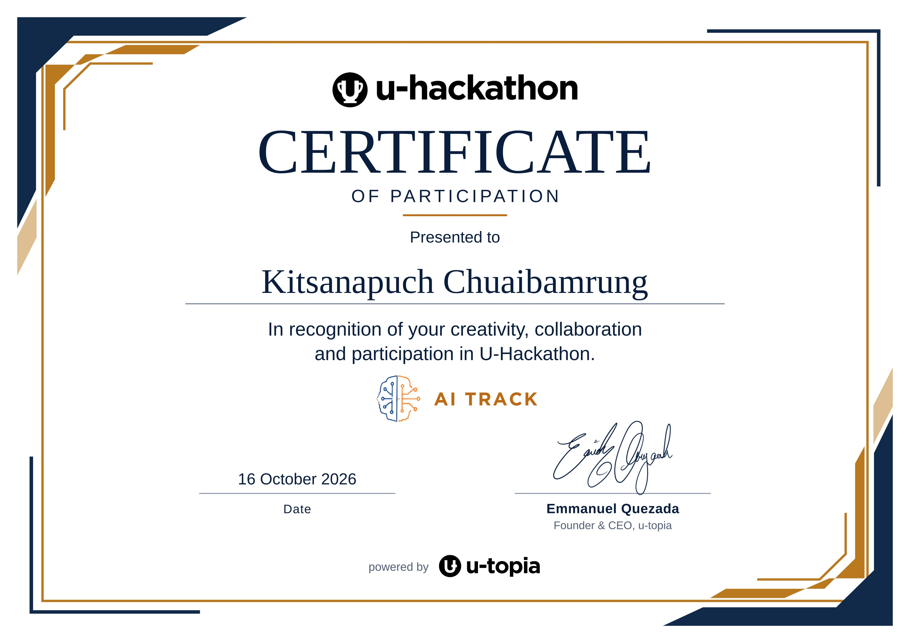
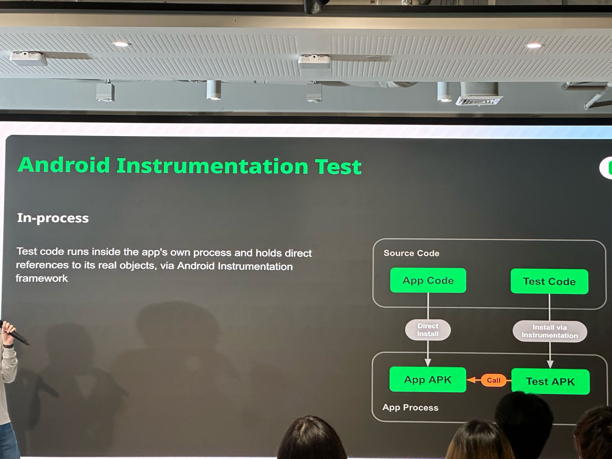
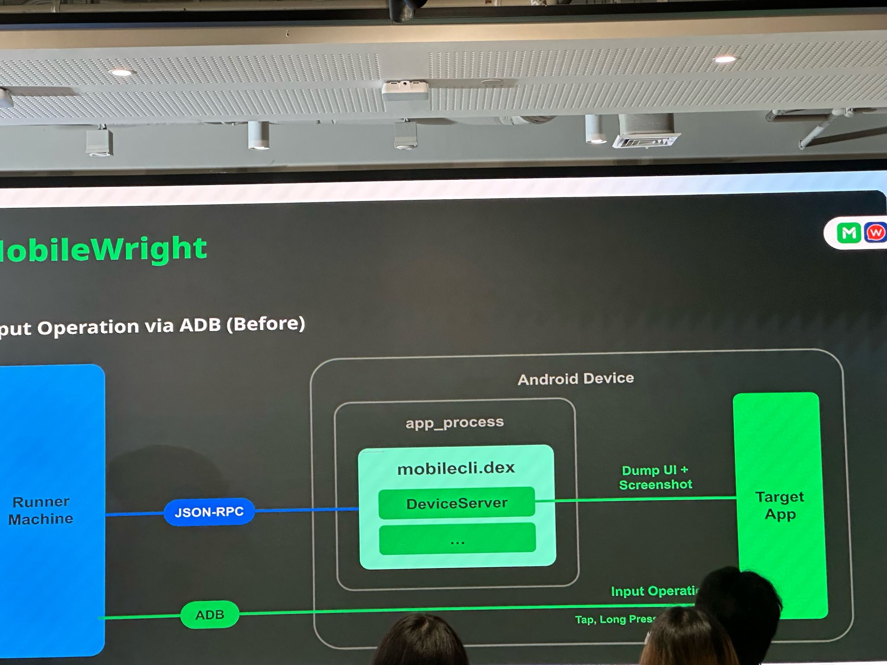
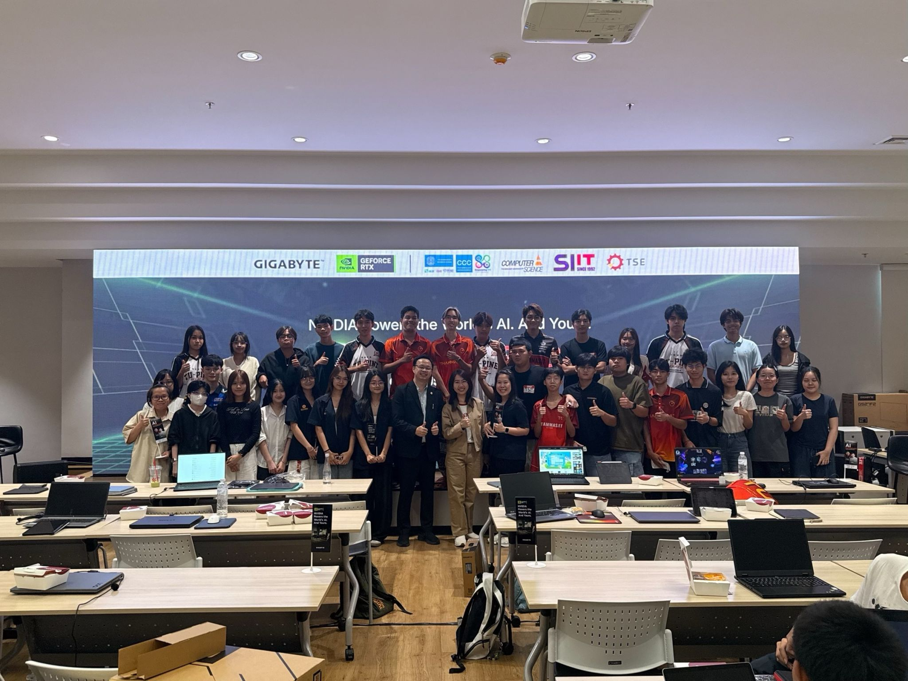
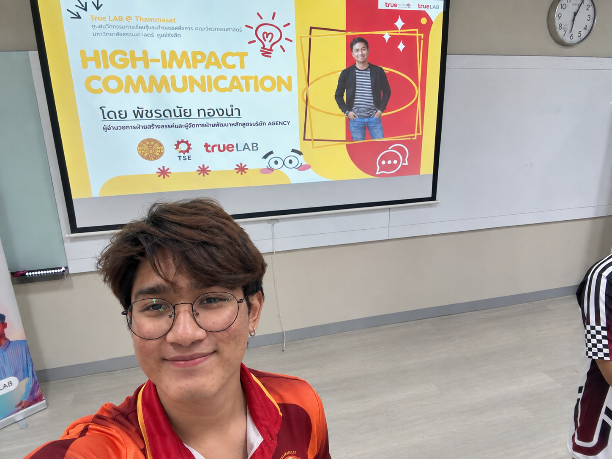

กิจกรรมและการอบรม
งานเสวนาเทคโนโลยี การเรียนรู้ผ่านการลงมือทำ และการพัฒนาทักษะ
15–16 ต.ค.
2026
2026
15–16 ตุลาคม 2026

01 / EVENT PORTRAIT 
02 / BUILDING TOGETHER 03 / U HACKATHON 
04 / EVENT BRIEFING 05 / JUDGES 
06 / SPONSORS 07 / เกียรติบัตร
U Hackathon
FLOW SUMMIT 2026 · Track 1 AI-Assisted Development · Application Prototyping · Software Engineering- เข้าร่วมการแข่งขัน Track 1 โจทย์เปิดที่ให้สร้างแอปพลิเคชันด้วย AI
- ทดลองใช้เครื่องมือ AI เพื่อช่วยพัฒนาแนวคิด เขียนโค้ด และสร้างต้นแบบแอปพลิเคชัน
- ประยุกต์ความรู้ด้านวิศวกรรมซอฟต์แวร์เพื่อเปลี่ยนแนวคิดให้เป็นแอปพลิเคชัน
- ฝึกพัฒนาซอฟต์แวร์โดยใช้ AI เป็นผู้ช่วย ภายใต้ระยะเวลาที่กำหนดในการแข่งขัน



12–16 ต.ค.
2026
2026
12–16 ตุลาคม 2026

01 / EVENT / 42 BANGKOK 
02 / HANDS-ON LEARNING 
03 / PEER LEARNING 
04 / WEB PROGRAMMING 
05 / เกียรติบัตร
Discovery Piscine — Web Programming Essentials
42 Bangkok · KLCC 4F HTML · CSS · JavaScript · Shell- เข้าร่วมบูตแคมป์พัฒนาเว็บไซต์ระยะเวลา 5 วัน เรียนรู้ผ่านแบบฝึกหัดและการลงมือสร้างเว็บไซต์จริง
- ฝึกวางโครงสร้างหน้าเว็บด้วย HTML จัดรูปแบบด้วย CSS เพิ่มการโต้ตอบด้วย JavaScript และใช้คำสั่งพื้นฐานใน Shell
- พัฒนาพื้นฐานการเขียนโปรแกรม การแก้ไขข้อผิดพลาด และการเชื่อมโยงความรู้ให้เป็นเว็บไซต์ที่ใช้งานได้
25 ก.ย.
2026
2026
25 กันยายน 2026

01 / TECH TALKS 
02 / TECH TALKS 03 / TECH TALKS 04 / TECH TALKS 
05 / TECH TALKS
TECH TALKS 2026 — 3rd Edition
LINE MAN Wongnai- เข้าร่วมฟังหัวข้อเทคนิคเกี่ยวกับปัญหาและแนวทางแก้ไขในงานวิศวกรรมซอฟต์แวร์จริง
- เรียนรู้การทดสอบ iOS E2E แบบอัตโนมัติ การทดสอบด้วยหลาย simulator และ Android UI automation
- เรียนรู้แนวปฏิบัติในการทดสอบซอฟต์แวร์ เครื่องมืออัตโนมัติ และการพัฒนาคุณภาพจากวิศวกรซอฟต์แวร์
- เข้าใจมากขึ้นว่าทีมวิศวกรรมซอฟต์แวร์นำระบบอัตโนมัติและการทดสอบมาใช้ในการพัฒนางานจริงอย่างไร


4 ก.ย.
2026
2026
4 กันยายน 2026
ดูโพสต์ต้นฉบับบน LinkedIn ↗
AI Experience — Campus Roadshow 2026
มหาวิทยาลัยธรรมศาสตร์- เข้าร่วมเวิร์กช็อป AI และเรียนรู้การประยุกต์ใช้ AI ในงานจริง
- ได้ทดลองลงมือทำ พร้อมเรียนรู้แนวโน้มและการประยุกต์ใช้ AI รูปแบบใหม่
- แลกเปลี่ยนความคิดกับผู้สนใจเทคโนโลยี และเปิดมุมมองด้าน AI กับนวัตกรรม

ก.ย.
2026
2026
กันยายน 2026
High-Impact Communication · True LAB @ Thammasat
High-Impact Communication for Work & Life
True LAB @ Thammasat · มหาวิทยาลัยธรรมศาสตร์- เข้าร่วมอบรมการสื่อสาร โดยเน้นการพูดอย่างมีประสิทธิภาพ การฟังอย่างตั้งใจ และการสื่อสารระหว่างบุคคล
- พัฒนาทักษะการนำเสนอความคิดอย่างชัดเจน การแลกเปลี่ยนมุมมอง และการทำงานร่วมกับผู้อื่น
- เสริมทักษะการสื่อสารและการทำงานเป็นทีม เพื่อนำไปใช้ทั้งในการเรียนและการทำงาน
